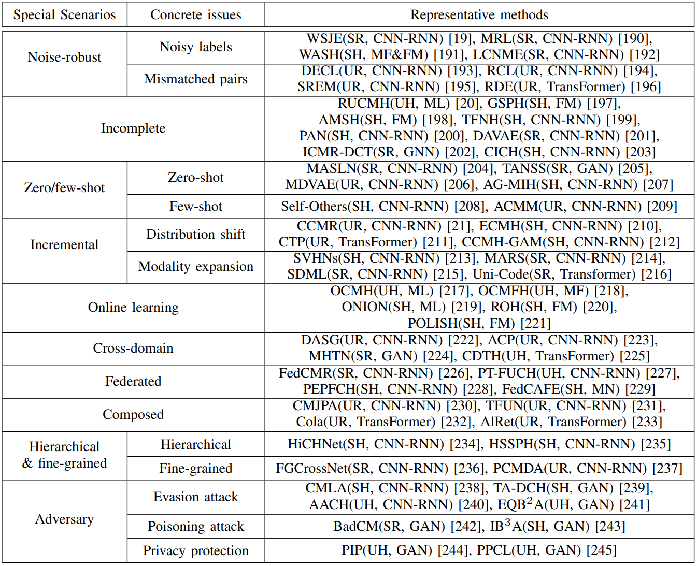

Abstract
With the exponential surge in diverse multi-modal data, traditional uni-modal retrieval methods struggle to meet the needs of users seeking access to data across various modalities. To address this, cross-modal retrieval has emerged, enabling interaction across modalities, facilitating semantic matching, and leveraging complementarity and consistency between different modal data. Although prior literature has reviewed the field of cross-modal retrieval, it suffers from numerous deficiencies in terms of timeliness, taxonomy, and comprehensiveness. This project conducts a comprehensive review of cross-modal retrieval's evolution, spanning from shallow statistical analysis techniques to vision-language pre-training models. Commencing with a comprehensive taxonomy grounded in machine learning paradigms, mechanisms, and models, the project delves deeply into the principles and architectures underpinning existing cross-modal retrieval methods. Furthermore, it offers an overview of widely-used benchmarks, metrics, and performances. Lastly, the project probes the prospects and challenges that confront contemporary cross-modal retrieval, while engaging in a discourse on potential directions for further progress in the field.

Illustration of cross-modal retrieval.
1 Multi-Modal Data
1.1 The heterogeneous gap of multi-modal data
Cross-modal retrieval stands as a pivotal domain within multi-media retrieval, poised with immense potential in the realm of artificial intelligence. Its purpose is to glean semantically pertinent information from disparate modalities, leveraging given modal cues like text, image, or video. Nonetheless, the landscape of cross-modal retrieval is rugged, the paramount among which is gauging content affinity amidst heterogeneous modal data—a conundrum often dubbed the heterogeneous modality gap.

Diagram of heterogeneous modality gap.
1.2 The distinct challenges across heterogeneous modalities
As cross-modal retrieval has advanced, it now extends beyond traditional text-image retrieval to encompass a broader array of data modalities and retrieval tasks. We explore the unique challenges associated with these modalities, offering insights into the specific techniques and architectures designed to handle the complexities of each combination.

Diagram of distinct challenges across heterogeneous modalities.
2 Text-Image Cross-Modal Retrieval
Current cross-modal retrieval methods are categorized into five overarching categories: unsupervised real-value retrieval, supervised real-value retrieval, unsupervised hashing retrieval, supervised hashing retrieval, and cross-modal retrieval under special scenarios. Each of these overarching categories is subdivided based on specific technical architectures or scenarios:

A compilation of representative text-image cross-modal retrieval methods. Above, CCA stands for canonical correlation analysis, CNN-RNN stands for convolutional neural network and recurrent neural network, GAN stands for generative adversarial network, GNN stands for graph neural network, and VLP model stands for vision-language pre-training model.
2.1 Unsupervised real-value retrieval
Unsupervised real-value retrieval aims to leverage the cooccurrence of multi-modal data, such as text and images appearing together, to capture their semantic correlation.
Depending on the design principles and learning strategies, it can be categorized into two types: early unsupervised realvalue retrieval and object-oriented image-text matching.
1) Early unsupervised real-value retrieval is subdivided into CCA methods, topic model methods, and auto-encoder methods;
2) Object-oriented image-text matching is subdivided into CNN-RNN methods, GNN methods, Transformer methods, VLP model methods, and cross-modal generation methods.
The evolutionary tree of representative unsupervised real-value retrieval methods.
2.2 Supervised real-value retrieval
Supervised real-value retrieval, benefiting from manual annotation, explores semantic association and category discrimination in multi-modal data to achieve cross-modal retrieval.
It involves two primary approaches: shallow and deep supervised real-value retrieval, based on different learning principles.
1) Shallow supervised real-value retrieval is subdivided into CCA methods, dictionary learning methods, feature mapping methods, topic model methods, and metric learning methods;
2) Deep supervised real-value retrieval is subdivided into CNN-RNN methods, GAN methods, GNN methods, and Transformer methods.
The evolutionary tree of representative supervised real-value retrieval methods.
2.3 Unsupervised hashing retrieval
Unsupervised hashing retrieval, akin to unsupervised real-value retrieval, leverages co-occurring multi-modal data (e.g., text-image pairs) to capture semantic correlations.
It is divided into shallow and deep types based on their principles.
1) Shallow unsupervised hashing retrieval is subdivided into matrix factorization methods, spectral graph methods, metric learning methods, and quantization methods;
2) Deep unsupervised hashing retrieval is subdivided into CNN-RNN methods, GAN methods, GNN methods, Transformer methods, and knowledge distillation methods.
The evolutionary tree of representative unsupervised hashing retrieval methods.
2.4 Supervised hashing retrieval
Supervised hashing retrieval, benefiting from manual annotation, effectively maps multi-modal data into a low-dimensional Hamming space for efficient search by exploiting category discrimination and semantic associations.
It can be divided into shallow and deep supervised hashing retrieval, based on different principles.
1) Shallow supervised hashing retrieval is subdivided into matrix factorization methods and feature mapping methods;
2) Deep supervised hashing retrieval is subdivided into CNN-RNN methods, GAN methods, GNN methods, Transformer methods, memory network methods, and quantization methods.
The evolutionary tree of representative supervised hashing retrieval methods.
2.5 Cross-modal retrieval under special scenarios
The cross-modal retrieval methods mentioned earlier are based on ideal assumptions and are applicable to general retrieval scenarios. However, practical constraints such as incomplete data collection, annotation noise, and specific retrieval needs have led to the development of various crossmodal retrieval methods tailored to address issues encountered in special scenarios.
A compilation of representative methods for cross-modal retrieval under special scenarios.
3 Cross-Modal Retrieval beyond Text-Image
As cross-modal retrieval has advanced, it now extends beyond traditional text-image retrieval to encompass a broader array of data modalities and retrieval tasks. This project also offers a comprehensive review of cross-modal retrieval methods that involve modalities beyond text-image, including text-video, text-audio, image-audio, image3D, and more. We explore the unique challenges associated with these extended modalities, offering insights into the specific techniques and architectures designed to handle the complexities of each combination.

A compilation of representative cross-modal retrieval methods beyond text-image retrieval.
4 Discussion and Outlook
As cross-modal retrieval continues to progress, it has the potential to revolutionize multimedia information retrieval and enable more efficient and comprehensive access to various data sources. Several promising research directions include:
1) Efficient cross-modal semantic modeling;
2) Multi-modal distribution adaptation;
3) Uncertain multi-modal data modeling;
4) Continuous retrieval model updating;
5) Interactive and user-centric retrieval;
6) Ethical challenges in cross-modal retrieval;
7) Distributed cross-modal retrieval.
5 Conclusion
Cross-modal retrieval addresses the growing need for accessing and utilizing diverse multi-modal data. The evolution of research in this field has improved the accuracy, stability, and scalability of retrieval systems. The project presents a comprehensive taxonomy, reviews numerous papers, and provides insights into cross-modal retrieval methods and architectures. It also offers guidance on dataset selection and performance evaluation metrics. The project explores opportunities, challenges, and future research directions, contributing to the understanding and development of cross-modal retrieval. Further exploration and innovation in this field are encouraged.
BibTeX
@article{li2023cross,
title={Cross-modal retrieval: a systematic review of methods and future directions},
author={Li, Fengling and Zhu, Lei and Wang, Tianshi and Li, Jingjing and Zhang, Zheng and Shen, Heng Tao},
journal={arXiv preprint arXiv:2308.14263},
year={2023}
}